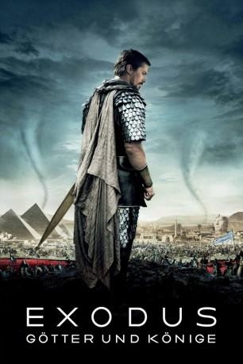

Alternativ: Exodus: Gods and Kings gesehen am 20.05.2015
gesehen am 20.05.2015
 
 IMDB-Wertung: 6.0 / 10
IMDB-Wertung: 6.0 / 10  Metascore:
Metascore: 
Moses und Ramses wachsen zusammen in der ägyptischen Pharaonenfamilie auf. Obwohl sie keine Blutsverwandtschaft verbindet, stehen sie sich doch sehr nahe. Während sie älter werden, nimmt das gegenseitige Verständnis jedoch immer weiter ab. Ramses steigt zum Pharao auf – Moses, der als Kind im Fluss gefunden wurde und aufgrund seiner Herkunft eigentlich gar nicht Ägypter ist, wird zur Stimme der unterdrückten Israeliten, die in Ägypten als Sklaven zum Bau der Pyramiden gezwungen werden. Eines Tages hat Moses eine Vision, in der Gott selbst erscheint und ihm aufträgt, die Israeliten durch die Wüste in das kanaanäische Land zu führen, um sie so von der Unterdrückung zu befreien. Moses wird dem Befehl folgen. Mit insgesamt 600.000 Ex-Sklaven geht er auf eine vierzig Jahre währende Wanderung zum Gelobten Land, dem Willen und den Streitkräften Ramses zum Trotz….
Jahr: 2014
Dauer: 150 Minuten
FSK: 12
Land: England Studio: 20th Century FoxTonspuren: DTS - ,
Untertitel: Deutsch,
Auflösung: 1080p (1920x800) Größe: 12083 MB
Genre: Action, Abenteuer, Drama, Fantasy
Regisseur:  Ridley Scott
Ridley Scott
Drehbuch: Adam Cooper, Bill Collage, Jeffrey Caine, Steven Zaillian
Soundtrack: Alberto Iglesias
Darsteller:
 Christian Bale als Moses
Christian Bale als Moses Joel Edgerton als Ramses
Joel Edgerton als Ramses John Turturro als Seti
John Turturro als Seti Aaron Paul als Joshua
Aaron Paul als Joshua Ben Mendelsohn als Viceroy Hegep
Ben Mendelsohn als Viceroy Hegep María Valverde als Zipporah
María Valverde als Zipporah Sigourney Weaver als Tuya
Sigourney Weaver als Tuya Ben Kingsley als Nun
Ben Kingsley als Nun Hiam Abbass als Bithia
Hiam Abbass als Bithia Indira Varma als High Priestess
Indira Varma als High Priestess Ewen Bremner als Expert
Ewen Bremner als Expert Golshifteh Farahani als Nefertari
Golshifteh Farahani als Nefertari Tara Fitzgerald als Miriam
Tara Fitzgerald als Miriam Dar Salim als Commander Khyan
Dar Salim als Commander Khyan Andrew Tarbet als Aaron
Andrew Tarbet als Aaron Ken Bones als Ramses' Scribe
Ken Bones als Ramses' Scribe Philip Arditti als Viceroy Hegep's Aide
Philip Arditti als Viceroy Hegep's Aide Christopher Sciueref als Stonework Guard
Christopher Sciueref als Stonework Guard Emun Elliott als Abiram
Emun Elliott als Abiram Kevork Malikyan als Jethro
Kevork Malikyan als Jethro Aaron Neil als Architect
Aaron Neil als Architect Giannina Facio als Jethro's Sister
Giannina Facio als Jethro's Sister Ziad Abaza als Divisional Commander , uncredited
Ziad Abaza als Divisional Commander , uncredited David Olawale Ayinde als Egyptian Civilian Lower Class , uncredited
David Olawale Ayinde als Egyptian Civilian Lower Class , uncredited Daniel Eghan als Palace Guard 2 , uncredited
Daniel Eghan als Palace Guard 2 , uncredited Tyrone Love als Royal couturier , uncredited
Tyrone Love als Royal couturier , uncredited João Costa Menezes als Moses' Army , uncredited
João Costa Menezes als Moses' Army , uncredited Serhat Metin als Royal Servant , uncredited
Serhat Metin als Royal Servant , uncredited Gerard Monaco als Scientist , uncredited
Gerard Monaco als Scientist , uncredited Adrian Palmer als Egyptian Thief , uncredited
Adrian Palmer als Egyptian Thief , uncredited Laurent Plancel als Palace Guard , uncredited
Laurent Plancel als Palace Guard , uncredited Sarah Sharman als Priestess , uncredited
Sarah Sharman als Priestess , uncredited Mens-Sana Tamakloe als Assassin , uncredited
Mens-Sana Tamakloe als Assassin , uncreditedDatei: X:\2014(A-F)\Exodus Götter und Könige (2014, FSK12, 1920x800) 3D.mkv seit 11.03.2015
Festplatte: HD 2013(I-Z)-2014(A-Z)
 Es gibt insgesamt 119 Filme in der Gruppe '2014(A-F)'
Es gibt insgesamt 119 Filme in der Gruppe '2014(A-F)'